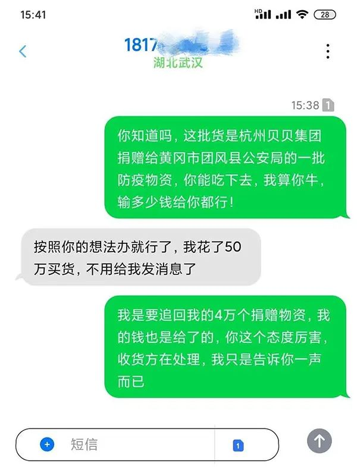
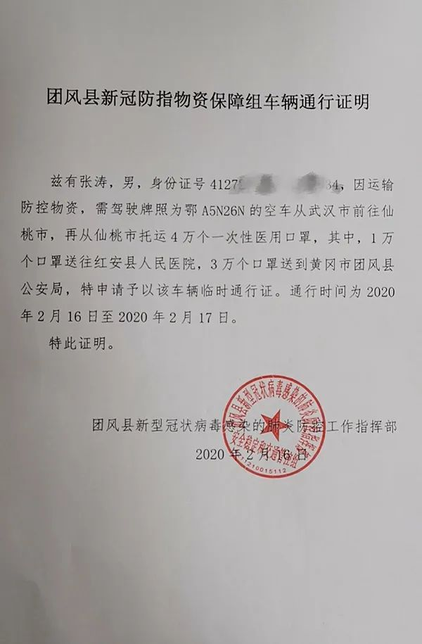

口述实录 | 起初还有点小心思，现在我的小货车已经“停”不下来了
原文链接 备份链接 经过这次疫情，我对《我不是药神》这部电影感触特别深。我明白了平时物资储存的重要性，这样在特殊时期才能派上大用场。 口述 | 赵 勐 整理 | 王仲昀 我叫赵勐，干物流行业的。大年初一下午，我一个人在家睡觉。醒来看到微信 …
澎湃新闻记者 杨喆
浙江一家企业捐赠给湖北团风县公安局的4万只口罩运输途中被侵占一事有了最新进展。
2月22日下午，湖北仙桃市公安局发布通告，经过专班民警的侦查，犯罪嫌疑人张某某在警方的攻势和压力下，已于22日投案自首，并退还了全部口罩货款。
谁侵占了4万只口罩？
2月15日，杭州贝贝集团有限公司委托湖北仙桃的个体商人陈豪代为在当地采购4万只口罩，捐赠给黄冈市团风县公安局和红安县人民医院。当天，贝贝集团一次性向陈豪指定的账户上转账19万元。
16日，在黄冈当地志愿者的帮助下，贝贝集团从团风县疫情防控指挥部开出了一张口罩运输的车辆通行证，通行证注明由司机张涛驾驶鄂A5N26N空车从武汉前往仙桃，运送4万只口罩，通行时间为2月16日至17日。

实际运输口罩的司机给志愿者的短信回复 本文图片均由受访者提供
2月19日，黄冈当地志愿者和贝贝集团方面向澎湃新闻（www.thepaper.cn）反馈，17日贝贝集团安排在武汉接货的司机一直等到凌晨2点也未等到从仙桃过来运送口罩的货车。
按照采购中间人提供的电话号码，贝贝集团和黄冈当地的志愿者多次联系当天承运的货车司机，但发车后司机就不再接听他们的电话了。“后来好不容易他回了短信，就是不承认运了4万只口罩的事情，只强调车上的口罩是自己花50万元买的。”负责在黄冈当地对接的志愿者吕小姐告诉记者。
19日，团风县公安局警务保障室主任王文成在澎湃新闻记者采访时表示，接到捐助方和志愿者的反映后，团风县公安局非常重视。18日局里指派他和另一位民警赶往仙桃市公安局与当地警方协商处理此事。
王文成告诉记者，这批4万只口罩在物资仓库并没有出库凭证。在仙桃当地，他们走访了采购中间人陈豪并找到了负责搬运口罩的装卸工人，工人向团风警方证实，他们一共将19万只口罩搬上了运输货车。

团风县疫情指挥部原先为张涛开具的车辆通行证
2月22日，仙桃市公安局宣传科相关负责人告诉澎湃新闻，16日原定由张涛驾驶鄂A5N26N货车从武汉前往仙桃的物资仓库运输4万只口罩。团风县疫情防控指挥部印发的通行证也写明是由张涛负责运输，但当天实际承运这批口罩的并不是张涛，而是嫌疑人张某某。
该负责人告诉记者，嫌疑人张某某当天正好也前往同一物资仓库运输其他货主购买的15万只口罩，因为目的地也在武汉，仓库对接人就请张某某一并运输贝贝集团的4万只口罩，并告诉了采购中间人陈豪。陈豪于是致电正在来仙桃途中的张涛，张涛接到陈豪的电话通知后便折返回武汉，他所驾驶的鄂A5N26N的货车也就没有在仙桃下高速。
志愿者吕小姐表示，由于贝贝集团在湖北仙桃当地的采购对接人陈豪此前未明确告知货车司机已变更为张某某，他们一直认为是张涛驾驶鄂A5N26N货车运走了4万只口罩。
团风县公安局警务保障室主任王文成也告诉记者，团风县疫情防控指挥部通行证上写明是由张涛运输口罩，且张涛和嫌疑人张某某同姓。一开始他们也误以为张涛就是运输司机。但后来经过仙桃警方的调查，张涛和鄂A5N26N的货车并未参与运输贝贝集团的4万只口罩，实际运输方换成了张某某。
仙桃市公安局宣传科相关负责人表示，案件专班开展侦查后，很快锁定了嫌疑人张某某。在警方的心理攻势下，张某某最终供述了自己侵吞贝贝集团捐赠的4万只口罩一事。嫌疑人在22日下午14时已经向仙桃警方投案自首，并退还了全部货款，目前案件正在进一步办理中。
误会消除，企业继续履行捐赠承诺
2月22日下午，张涛对澎湃新闻表示，16日晚10点他接到朋友的电话，请他去仙桃运送贝贝集团捐赠的4万只口罩回武汉，由于公司其他员工白天已经跑了多趟运输，非常疲惫，于是他便亲自驾驶货车从武汉出发赶往仙桃。但当天他确实没有到仙桃，接到对接人电话后就中途折返了。
此前被误认为是侵占口罩的嫌疑人，张涛表示自己很委屈。

张涛（右）
张涛告诉记者，疫情发生后，作为武汉市美慧物流公司的负责人，他自发成立了爱心车队运输抗疫物资。由于经常参与公益活动，他的电话号码也被转发到了各种聊天群里，疫情期间有防护物资需要运送很多人都会主动联系他。
据《楚天都市报》报道，武汉疫情加重后，张涛从河南老家返回武汉，组建了爱心车队，公司47台车全部加入爱心车队，有10多台车是张涛自己的，其余都是兄弟们自愿加盟的。他贴车贴人，还贴了12万的油费，被车队队员们称为“傻子队长”。
杭州贝贝集团公关部相关负责人表示，22日下午仙桃警方已经通过银行向贝贝集团账户转回了4万只口罩的货款。虽然货款被追回，但贝贝集团经过研究决定，继续履行原先的承诺，仍旧向团风县公安局等单位捐助4万只口罩。由于企业仓库中一次性口罩仅剩1万余只，贝贝集团决定剩余部分用此前在国外采购的KF94口罩代替，4万只口罩预计在23日便可从杭州发出。
戳这里进入
“全国新型冠状病毒感染病例实时地图”↓↓↓
本期编辑 周玉华
推荐阅读


原文链接 备份链接 经过这次疫情，我对《我不是药神》这部电影感触特别深。我明白了平时物资储存的重要性，这样在特殊时期才能派上大用场。 口述 | 赵 勐 整理 | 王仲昀 我叫赵勐，干物流行业的。大年初一下午，我一个人在家睡觉。醒来看到微信 …
原文链接 备份链接 封面报道之产业篇： 荆门：消毒剂企业难复工 | 神农架：10名患者现林区 | 十堰：“东风城”亟待开工 1月3日新冠肺炎确诊患者44例的时候，湖北仙桃市口罩厂的老板李力总觉得会有事发生。此前，他已经在网上看到非典在武汉 …
原文链接 备份链接 【财新网】（记者 孙良滋 实习记者 单镭婧）湖北仙桃市既是疫区，同时也是防疫物资口罩的全国主要生产地之一。过去一周，民用口罩的生产方面对仙桃市和湖北省两级政府完全不同的生产政策，坐了一趟过山车。 约2月1日起，仙桃 …
原文链接 备份链接 出品|网易清流工作室 作者|刘培 主编|赵妍 爆料邮箱： stoolpigeon@service.netease.com 在全国抗疫的紧张备战中，位于武汉西南100公里之外——仙桃被委以重任。1月26日在湖北新型冠状病 …
原文链接 备份链接 各方资源和关注的焦点是武汉，但在周边16座也因疫情而被封闭的城市里，他们正在经历着什么 文 |《财经》记者 房宫一柳 宋玮 黎诗韵 管艺雯 陈晶 余洋洋 实习生 马可欣 张凡 编辑 | 宋玮 1月24日，农历鼠年除夕 …